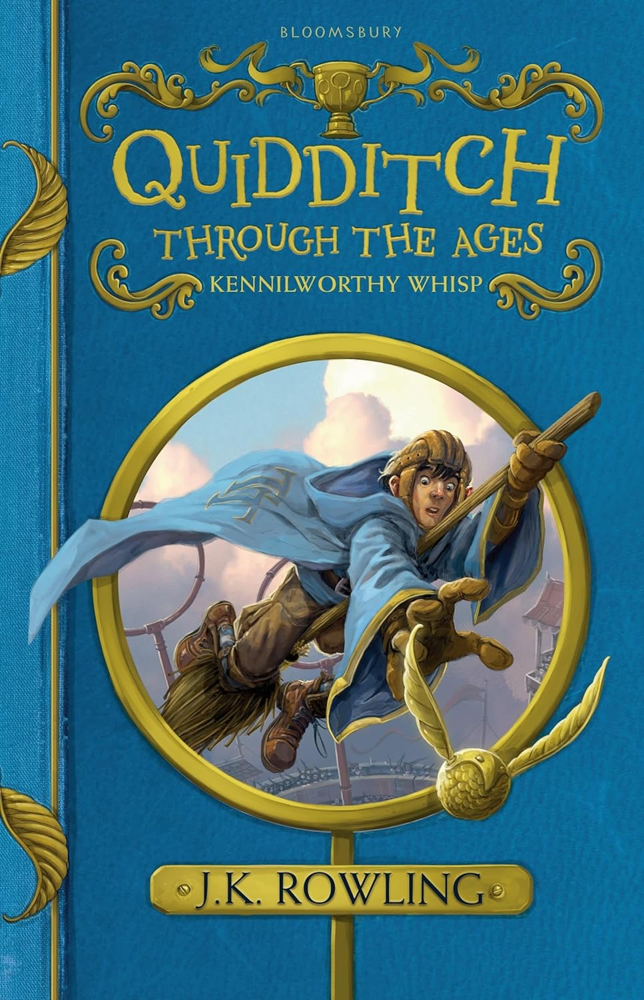
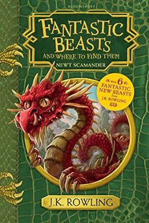

"Harry Potter, an orphaned boy raised by his unkind relatives, discovers he is a wizard on his eleventh birthday when he receives a letter inviting him to attend Hogwarts School of Witchcraft and Wizardry. At Hogwarts, Harry befriends Ron Weasley and Hermione Granger, and together they uncover the mystery surrounding the Philosopher's Stone, an object with the power to grant immortality. They must prevent it from falling into the hands of the dark wizard Voldemort, who seeks to return to power. Along the way, Harry learns about friendship, bravery, and the importance of standing up for what is right."
"Harry Potter, an orphaned boy raised by his unkind relatives, discovers he is a wizard on his eleventh birthday when he receives a letter inviting him to attend Hogwarts School of Witchcraft and Wizardry. At Hogwarts, Harry befriends Ron Weasley and Hermione Granger, and together they uncover the mystery surrounding the Philosopher's Stone, an object with the power to grant immortality. They must prevent it from falling into the hands of the dark wizard Voldemort, who seeks to return to power. Along the way, Harry learns about friendship, bravery, and the importance of standing up for what is right."
 "Harry Potter and the Cursed Child" follows the story of Harry Potter's youngest son, Albus Severus Potter, who struggles to live up to the family legacy while grappling with the weight of his father's past. Albus, along with his friend Scorpius Malfoy, embarks on an adventure through time with a Time-Turner to right the wrongs of the past. However, their actions have unforeseen consequences, leading to a confrontation with dark forces and a journey of self-discovery for both Albus and Harry. The play explores themes of family, friendship, and the choices that define us, offering a new perspective on the beloved world of Harry Potter."
"Harry Potter and the Cursed Child" follows the story of Harry Potter's youngest son, Albus Severus Potter, who struggles to live up to the family legacy while grappling with the weight of his father's past. Albus, along with his friend Scorpius Malfoy, embarks on an adventure through time with a Time-Turner to right the wrongs of the past. However, their actions have unforeseen consequences, leading to a confrontation with dark forces and a journey of self-discovery for both Albus and Harry. The play explores themes of family, friendship, and the choices that define us, offering a new perspective on the beloved world of Harry Potter."
 "Fantastic Beasts: The Crimes of Grindelwald - The Original Screenplay" delves deeper into J.K. Rowling's Wizarding World, following the aftermath of Gellert Grindelwald's escape from custody. With Grindelwald's dark intentions to elevate pure-blood wizards to supremacy, Albus Dumbledore enlists the help of magizoologist Newt Scamander to thwart his plans. As Newt embarks on a perilous journey, he encounters a host of magical creatures, forms unexpected alliances, and unearths long-buried secrets about the past. Against the backdrop of a world teetering on the brink of chaos, Newt and his companions must navigate treacherous waters of power, prejudice, and loyalty to prevent Grindelwald's reign of terror."
"Fantastic Beasts: The Crimes of Grindelwald - The Original Screenplay" delves deeper into J.K. Rowling's Wizarding World, following the aftermath of Gellert Grindelwald's escape from custody. With Grindelwald's dark intentions to elevate pure-blood wizards to supremacy, Albus Dumbledore enlists the help of magizoologist Newt Scamander to thwart his plans. As Newt embarks on a perilous journey, he encounters a host of magical creatures, forms unexpected alliances, and unearths long-buried secrets about the past. Against the backdrop of a world teetering on the brink of chaos, Newt and his companions must navigate treacherous waters of power, prejudice, and loyalty to prevent Grindelwald's reign of terror."
 "Fantastic Beasts: The Secrets of Dumbledore - The Complete Screenplay" delves into a new chapter of the Wizarding World, as magizoologist Newt Scamander joins forces with Albus Dumbledore to confront rising threats of dark magic. Tasked with uncovering secrets that could alter history, Newt embarks on a global adventure alongside trusted allies and a host of magical creatures. As the stakes escalate, Newt must confront his own past while navigating treacherous waters of power and loyalty. Filled with intrigue, suspense, and captivating wizarding lore, "Fantastic Beasts: The Secrets of Dumbledore" promises fans a spellbinding journey into the heart of magic and mystery."
"Fantastic Beasts: The Secrets of Dumbledore - The Complete Screenplay" delves into a new chapter of the Wizarding World, as magizoologist Newt Scamander joins forces with Albus Dumbledore to confront rising threats of dark magic. Tasked with uncovering secrets that could alter history, Newt embarks on a global adventure alongside trusted allies and a host of magical creatures. As the stakes escalate, Newt must confront his own past while navigating treacherous waters of power and loyalty. Filled with intrigue, suspense, and captivating wizarding lore, "Fantastic Beasts: The Secrets of Dumbledore" promises fans a spellbinding journey into the heart of magic and mystery."

"A perennial bestseller in the wizarding world and one of the most popular books in the Hogwarts School library, Quidditch Through the Ages contains all you will ever need to know about the history, the rules – and the breaking of the rules – of the noble sport of Quidditch. Packed with fascinating facts, this definitive guide by the esteemed Quidditch writer Kennilworthy Whisp charts the game’s history from its early origins in the medieval mists on Queerditch Marsh, through to the modern-day sport loved by so many wizard and Muggle families around the world. With comprehensive coverage of famous Quidditch teams, the commonest fouls, the development of racing brooms, and much, much more."

"Fantastic Beasts and Where to Find Them" invites readers into the captivating world of magizoology, exploring the extraordinary creatures that inhabit the Wizarding World. Written by renowned magizoologist Newt Scamander, the book provides invaluable insights into a diverse array of magical creatures, from the majestic Thunderbird to the mischievous Niffler. Through detailed descriptions and fascinating anecdotes, readers embark on a journey to uncover the habitats, behaviors, and magical properties of these enchanting beasts. Whether you're a seasoned wizard or a curious Muggle, "Fantastic Beasts and Where to Find Them" offers a delightful glimpse into the wonders of the wizarding fauna."